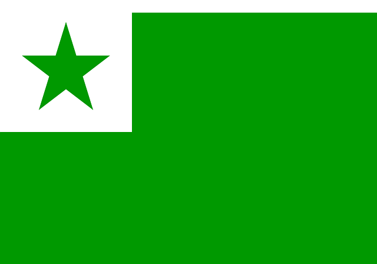
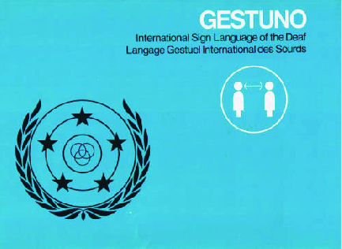
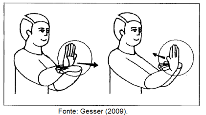

Imprimir o livro todo
Imprimir o livro todo
Mitos em torno da Língua de Sinais
| Site: | Ambiente Virtual de Aprendizagem do Ifes |
| Curso: | [Repositório][DocentEPT 2022] Libras |
| Livro: | Mitos em torno da Língua de Sinais |
| Impresso por: | Waldenilson Novaes Carneiro |
| Data: | quinta, 23 mar 2023, 13:04 |
Índice
1. Mitos e crenças sobre a língua de sinais: entendendo essa questão
.png)
![Audiodescrição do cartoon de Ricardo Ferraz. Cartoon preto e branco, com três personagens. A esqueda o desenho de um homem, ele tem cabelos espetados, olhos grandes, nariz oval, sua boca está semi aberta com os dentes a mostra. Usa camiseta e calça, em sua mão direita, segura um livro com a frase 'Curso Alemão. Acima de sua cabeça o balão de fala com a frase 'Lá vem o mudinho, eu não entendo nada que ele 'Fala'. Ao centro, o desenho de um homem, ele tem cabelo espetado, olhos achatados, nariz oval, sua boca é representada por uma linha. Esta usando blusa e calça bancas, em sua mão um livro com a frase 'Curso Russo'. A direita, o desenho de um homem, ele tem cabelo espetado, olhos arregaçados, nariz oval, esta sorrindo. Usa blusa branca e calça cinza, está fazendo simbolos em libras com as mãos. Ao fundo, cartazes com os nomes: Curso Japonês, Curso Árabe, Curso Alemão, Curso Russo.](arquivos/%7B5FD6FB6B-4641-4591-8010-3C5E8CDEE7E2%7D_desenho05.jpg.jpg)
Fonte: Ricardo Ferraz / Ilustrador e cartunista
Historicamente, os mitos em torno da língua de sinais relacionam-se com a concepção que se tem da surdez como algo incapacitante e que leva o indivíduo nesta condição a ser estigmatizado como alguém inferior aos ouvintes e limitado em suas ações no contexto social. Deste modo, cria-se um imaginário de que os sinais usados pelos surdos não é algo a ser chamado de língua, mas um conjunto de gestos que geram uma comunicação limitada ou às vezes sem sentido. Tal concepção, por mais que tenha perdurado por muitos anos, passou a ser superada a partir dos estudos que identificaram o caráter linguístico da língua de sinais a partir dos anos 60.
Pesquisas realizadas por Willian Stokoe, em 1960, a partir de suas investigação sobre a língua Americana de Sinais, comprovaram que as línguas de sinais(LS) podem ser comparadas a quaisquer línguas orais no que diz respeito à complexidade e expressividade, atendendo a todos os critérios de uma língua genuína. Na verdade, as Línguas de sinais (LS) diferem das línguas orais na modalidade, visto que a Língua Portuguesa (usada pelos ouvintes brasileiros) é oral-auditiva, e a Língua Brasileira de Sinais - Libras (usada pelos surdos brasileiros) é visual-espacial.
A comunicação por sinais é utilizada por sujeitos surdos desde os tempos mais remotos, tendo surgido naturalmente a partir de suas necessidades de expressão e comunicação. Todavia, como já referido, o status linguístico somente lhe foi conferido a partir da década de 60, por meio dos estudos do linguista americano Willian Stokoe (1960), pois este mostra que os sinais não eram apenas imagens, gestos ou mímicas. Em suas observações sobre Língua de Sinais Americana – ASL –, este pesquisador identificou que as línguas de sinais eram estruturadas a partir de unidades mínimas que formam unidades mais complexas, possuindo então níveis linguísticos, conforme as línguas orais o possuem. Stokoe (1960) foi o primeiro a analisar os sinais e pesquisar sua composição, comprovando que cada sinal apresentava pelo menos três partes independentes que os constituíam que são: configuração de mãos (CM), que diz respeito à forma que as mãos tomam na elaboração do sinal; o ponto de articulação (PA) ou locação (L), que remete ao lugar onde este sinal é realizado; e movimento (M), que pode estar ou não presente no sinal.
Posteriormente, outros estudos identificaram na elaboração do sinal a orientação da palma da mão (O), que indica a direção da palma durante o sinal. Percebeu-se ainda que as mãos não eram o único veículo usado pelos surdos para produzir a informação linguística, pois estes utilizam recorrentemente as expressões corporais e faciais, as chamadas marcações não manuais (MNM), que diferentemente das línguas orais, “são elementos gramaticais que compõem a estrutura da língua;...” (Gesser, 2009 p. 18).
![Audiodescrição do Cartoon 'That deaf guy' by Matt & Kay Daigle. Desenho de uma família conversando em libras. A esquerda os pais, o pai é branco, tem cabelo castanho e arrepiado, usa camisa verde. A mãe é branca, tem cabelos castanhos e longos, usa camisa azul de manga. A direita, o filho, ele é branco, tem cabelo castranho e curto, usa blusa laranja. Ao seu lado, uma criala, ela tem a pele amarela, cabelos pretos e usa camisa vermelha. Acima de sua cabeça a frase 'Que legal! Seus pais usam a língua de sinais, então eles podem falar de boca cheia!'.](arquivos/pasted%20image%200.png)
Fonte: By Matt & Kay Daigle
Apesar de terem status linguístico há mais de meio século, é pertinente salientar que, nos dias de hoje, ainda pairam mitos equivocados a respeito destas línguas viso-espaciais. Uma crença muito comum é a de que as línguas de sinais (LS) seriam apenas linguagem e não língua, o que, conforme Quadros e Karnopp (2004), não procede, pois a língua é parte da linguagem, mas diferencia-se por ser um produto social que surge e evolui da necessidade de comunicação de um grupo.
2. Alguns mitos em torno da língua de sinais
Fonte: Freepik.com/Autor Freepik
Quadros e Karnopp (2004) e Gesser (2009) trazem à tona algumas crenças e preconceitos acerca da língua de sinais que são frequentemente elencados por grande parte das pessoas ouvintes. Estas e outras obras esclarecem e sensibilizam o leitor acerca da realidade surda e das concepções errôneas socialmente construídas em torno da língua de sinais. Assim, desmistificam concepções errôneas relacionadas a esta modalidade de língua. Parece ser necessário dizer aos ouvintes que a língua de sinais faz parte do universo humano e que este não necessariamente manifesta-se apenas pelo som, mas também de forma visual. Esta expressão linguística manifesta de forma visuoespacial, em que a informação é produzida pelo corpo e captada pela visão e em nada se aproxima de uma condição patológica, mas, de fato, é cultural.
É o que veremos a partir de agora. Afinal, o que são línguas de sinais?
Fonte: Freepik.com/Autor Pikisuperstar
2.1 A língua de sinais é universal?
Este
mito relaciona-se à ideia de que a língua de sinais é um código
simplificado que é transmitido e utilizado pelos surdos de toda parte.
Porém, assim como cada país possui seu idioma oral, o mesmo acontece com
as línguas de sinais, visto que a língua está atrelada a questões
culturais de cada país.
Pensar
que a língua de sinais é universal é muitas vezes aproximá-la do gestos
feitos pela maioria dos ouvintes e muitas vezes compartilhados entre
pessoas de países diferentes. Todavia, até mesmo os gestos podem não ser
universais, visto que estão ligados a aspectos culturais de cada país
ou comunidade, podendo um gesto inocente e comumente usado em um
determinado lugar ser ofensivo em outro.
Em
se tratando de língua de sinais, cada país possui a sua língua com o
nome específico. Em Portugal, nomeia-se a Língua Gestual Portuguesa -
LGP; em Angola, Língua Gestual Angolana - LGA; e, na França, Língua de
Sinais Francesa - LSF; e assim por diante.
Veja o exemplo a seguir:
![Tirinha dividida em quatro quadrinhos. A esquerda para a direita, no primeiro quadrinho a língua espanhola de sinais, a mão representada da esquerda para direita próximo ao queiro. Ao centro, a língua japonesa de sinais e a língua espanhola de sinais. Na língua japonesa, o sinal é representado com o dedo mindinho, que estende-se do queixo a borda da boca. Na língua australiana, uma mão aberta, sobre essa outra mão com três dedos. No quadrinho a direita, a língua americana de sinais, representada com a mão aberta próximo ao queixo.](arquivos/pasted%2520image%25200_002.png)
A diferença do sinal “mãe” em quatro diferentes línguas de sinais. (Gesser, 2009 p.12)
Fonte: Retirado e adaptado de Moore e Levitan (1993: 38)
“Em
qualquer lugar em que haja surdos interagindo, haverá línguas de
sinais. Podemos dizer que o que é universal é o impulso dos indivíduos
para a comunicação e, que no caso dos surdos, esse impulso é
sinalizado”.(Gesser, 2009 p.12).

Veja isso expresso no vídeo a seguir:
De acordo com o que o vídeo evidencia e ainda conforme a autora supra citada, esta crença aponta para uma visão simplista da língua de sinais, que seria aprendida e transmitida pelos surdos de modo geral. O que não é verdade, uma vez que Língua está ligada a questões culturais e, por isto, a língua de sinais de cada país tem suas características específicas.
2.2 A língua de sinais é artificial e não tem gramática?
Esta
crença é muito comum e demonstra uma visão minimizante da língua de
sinais como algo simplista que foi inventado, até mesmo pelos ouvintes,
para ser uma comunicação alternativa e mundial. Línguas artificiais são
projetadas por alguém ou por um grupo para serem utilizadas
internacionalmente, como parte de tentativas de unir a humanidade por
meio de uma língua, minimizar esquemas de dominação através da língua ou
ainda promover a paz mundial. Há também a finalidade artística, como no
caso de "línguas" criadas para ficção, tal como ocorre em Jornada nas Estrelas e Senhor dos Anéis, dentre outros.
Contudo, “A
língua de sinais dos surdos é natural, pois evoluiu como parte de um
grupo cultural do povo surdo”, Gesser (2009, p.12). Conforme dito acima,
existem línguas que de fato são criadas para fins específicos. É o caso
do Esperanto (1), uma oral criada para uso internacional criada por volta de 1887 pelo judeu-polonês Ludwig Lazarus Zamenhof e do Gestuno (2), uma língua de sinais criada também para uso internacional e começou a ser pensada pela Federação Mundial dos Surdos entre 1951 e 1973.

Figura 1: Esperanto
Fonte: Pixabay.com/Autor Clker-Free-Vector-Images

Figura 2: Gestuno
Fonte: Jiří Langer adaptado da Amazon
E sobre a gramática? O que podemos dizer?
Primeiramente, é importante dizer que os estudos que deram às línguas de sinais o status linguístico iniciam na década de 60 a partir dos estudos do pesquisador norte-americano William Stokoe. Em suas investigações, Stokoe analisa a língua de sinais nos níveis fonológicos (3) e morfológicos e identifica que os sinais são constituídos por no mínimo três parâmetros: Configuração de mão (CM), Ponto de articulação (PA) ou Locação (L) e Movimento (M), segundo Quadros e Karnopp (2004 , p. 30).
Stokoe observou que os sinais não eram imagens, mas símbolos abstratos complexos, com uma complexa estrutura interior. Ele foi o primeiro, portanto, a procurar uma estrutura, a analisar os sinais, dissecá-los e a pesquisar suas partes constituintes.
Por CM entende-se ser o formato da mão na produção do sinal; por PA ou L, entende-se ser o espaço onde este sinal acontece, seja ancorado no corpo ou em um espaço neutro. E por M Stokoe o apresenta pela constatação de que o sinal pode ter ou não ter movimento. Veja o exemplo a partir da ilustração abaixo:

Fonte: Equipe DocentEPT/Adaptado do material blog librasitz
A partir da década de 1970 um quarto parâmetro fonológico foi acrescido nas línguas de sinais. Por meio de suas investigações sobre a Língua de Sinais Americana (ASL), Edward S. Klima e Ursula Bellugi, em 1979, identificaram a orientação da palma da mão - OP como um elemento constitutivo do sinal. Tal achado demonstrou que dois sinais contendo a mesma configuração de mão, a mesma localização e o mesmo movimento poderiam ter o significado diferenciado por meio de uma orientação da palma da mão. Isto é o que se percebe no sinal abaixo:

Estes quatro parâmetros fonológicos apresentados compõem simultaneamente os sinais. Todavia, As mãos não são o único veículo usado nas línguas de sinais para produzir informação linguística". Há ainda as Marcas Não-Manuais, conhecidas também como expressões faciais e corporais, que adquirem um status fonológico na formação de alguns sinais. Vejam os exemplos no vídeo a seguir:

Expressão Facial e Corporal - em LIBRAS
Neste
tópico, estudamos como o sinal é formado. Cada parâmetro fonológico é
muito importante na constituição de uma sinal e sua alteração pode
alterar totalmente o significado deste. Agora que você já sabe, vamos
praticar?
Videoaula - Libras "Apresentação e Cumprimentos - parte 1 - Rebeca Nemer
Aprofunde seus conhecimentos
- Para saber mais sobre o Esperanto, acesse: https://youtu.be/oXXDOPvplkk
- Para conhecer o gestuno, acesse: https://youtu.be/cgX71Uo4ubo
- Segundo Quadros e Karnopp (2004 p. 47).
“A primeira tarefa da fonologia para língua de sinais é determinar quais são as unidades mínimas que formam os sinais. A segunda tarefa é estabelecer quais são os padrões possíveis de combinação entre essas unidades e as variações possíveis no ambiente fonológico.”
2.3 A língua de sinais é um sistema superficial, baseado em mímicas e de expressão linguística restrita?
Uma
crença que merece destaque é a de que por meio da língua de sinais não
seria possível expressar conceitos abstratos. Isto é uma inverdade, uma
vez que esta crença remete a uma visão carregada de preconceitos a
respeito das línguas de sinais, como se fossem limitadas, não passando
de mímica ou código primitivo. Todavia, assim como os ouvintes, os
surdos podem participar de várias situações discursivas envolvendo
diversas temáticas e, mesmo sem produção vocal, participar de qualquer
interação social por meio de sua língua.
Logo, resposta a questão que intitula este tópico é não! Trata-se de um mito ancorado em na crença de que a língua de sinais é incapaz de expressar conceitos abstratos, sendo baseada em uma comunicação concreta. Contudo,
"[...]
as língua de sinais são língua de modalidade visuoespacial que
apresentam uma riqueza de expressividade diferente das línguas orais,
incorporando tais elementos na estrutura dos sinais através de relações
espaciais, estabelecidas pelo movimento ou outros recursos
linguísticos". (Quadros e Karnopp, 2004, p. 35).

Observe os exemplos nas sinalizações a seguir e aproveite para se aproximar mais do vocabulário da Libras:
Piada
Tecnologia
Poesia
2.4 A língua de sinais é constituída do alfabeto manual?

Antes de respondermos à questão que intitula este tópico, observe a situação acima.
Como se pode ver, seria inviável realizar toda comunicação usando o alfabeto manual. Conforme Gesser (2009), o Alfabeto manual possui uma função na interação entre os usuários de língua de sinais, tratando-se de um recurso empregado para apresentar nomes próprios de pessoas, lugares, instituições ou qualquer outro termo para o qual ainda não exista um sinal. Afinal, valendo-se apenas da soletração, seria demandado um tempo muito maior para falar um simples sentença ou ainda para realizar uma conversa sobre diversos temas.
Na Libras e também nas línguas de sinais de outros países, há palavras que são soletradas, o que se dá por um processo natural por meio do contato com a língua majoritária, ou seja, a língua oral do país. É o caso do sinal NUNCA, realizado por meio da soletração N-C-A ou N-U- N, ou ainda o sinal BAR, que é realizado por meio das letras B-A-R, em que o B e o A se apresentam com orientação da palma para dentro e a partir de um torção do pulso para frente o R é apresentado da forma convencional. É importante dizer que o "sinal soletrado" ou "soletração rítmica" diferem a datilologia, em que é apresentado letra por letra para dizer o nome de uma instituição, por exemplo. Na soletração rítmica, temos a supressão de algumas letras e as que se fazem presentes são realizadas com orientação da palma da mão invertida ou um ritmo e velocidade específicos, consolidando o "sinal soletrado".
Esta visão de que o alfabeto é a língua de sinais é mais um reflexo de uma visão limitada e simplista destas línguas, como se derivasse e dependesse da estrutura da língua oral. Mas, conforme já vimos, isto se trata de um mito acerca destas línguas.
Que tal praticar o alfabeto manual? Conhecendo-o, você pode ser apresentar a algum surdo e iniciar uma interação.
Escolha alguns nomes de seus familiares e amigo e pratique a soletração. Lembre-se: a Libras não se resume ao alfabeto, mas o alfabeto manual faz parte desta língua.
![Audiodescrição do alfabeto em libras. A - Mão fechada B - Polegar fechado na palma da mão, os demaos dedos levantados. C - Mão em formato de meia lua Ç - Mão em formato de meia lua BALANÇANDO D - Dedo indicador levantado, polegar e dedo médio encostados em formato de meia lua. E - Dedos dobrados no meio da mão F - Polegar e indicador fechados em formato de círculo, os demais dedos levantados G - Polegar e indicador em pé, os demais dedos abaixados no meio da mão H - Dedo indicador e médio em pé, representando um 2 em vai e vem, I - Dedo mindinho levantado, os demais abaixados J -Dedo mindinho abaixado, os demais dedos fazem o movimento para baixo K - Dedos indicador e médio levantados movimentando-se para cima L - Indicador e polegar em pé representando um L. M - Anelar, médio e indicador apontados para baixo N - Indicador e médio apontados para baixo O - Polegar encostado no indicador em formato de O. P - Indicador e médio representados para baixo em sinal de 2. Q - Indicador e polegar apontados pra baixo. R - Indicador sobre o médio apontados para cima, um sobre o outro. S -Mão fechada com o polegar sobre os outros dedos. T - Indicador dobrado para baixo com o polegar sobre ele. Os demais dedos levantados para cima U - Médio e indicador levantados, com o polegar apontado ao centro no centro da mão. V - Mão com o dedo médio e indicador levantado no sinal de 2. W - Indicador, médio e anelar apontados para cima apontado para cima. X - Indicador apontado para baixo movendo-se ao centro. Y - Mindinho e polegar fazendo movimento de hang loose. Z - Indicador em pé, fazendo o sinal de Z](arquivos/AD1.png)
Fonte: Blog Oficina de Libras
Para saber mais sobre soletração rítmica, assista ao vídeo "Soletração Rítmica ou Sinais soletrados", disponível em: https://youtu.be/QD7JZM6zBsM
Referências bibliográficas
![]()
GESSER, Audrei. LIBRAS?:Que língua é essa?: Crenças e preconceitos em torno da língua de sinais e da realidade surda. São Paulo. Parábola Editorial, 2009.
QUADROS, Ronice M. KANOPP, Lodenir B. Língua de sinais brasileira: estudos linguísticos. Porto Alegre. Artmed, 2004
Vídeos:
- “Vamos conhecer línguas de sinais diferentes”
- “Expressão Facial e Corporal - em LIBRAS”
- “Vídeo Aula - Libras "Apresentação e Cumprimentos - parte 1 " Rebeca Nemer”
- Esperanto
- Gestuno
- Piada em Libras: O encontro
- Surdos na era digital: quais os benefícios que a tecnologia proporciona?
- Tempo de poesia – Orgulho surdo!- Mariana Ayelen
https://youtu.be/LHPf5AzxO74
- Soletração LIBRAS
- "Soletração Rítmica ou Sinais soletrados"

Ficha Técnica
|
Título |
|
|
Autoria |
Carla Rejane de Paula Barros Caetano (2021) / Fernanda dos Santos Nogueira (2021) |
|
Design gráfico |
Camila Karoline Justino Marques |
|
Design instrucional |
Michele Silva da Mata |
|
Revisão textual |
Cláuberson Correa Carvalho |

Este trabalho está licenciado com uma Licença Creative Commons - Atribuição-NãoComercial-CompartilhaIgual 4.0 Internacional.